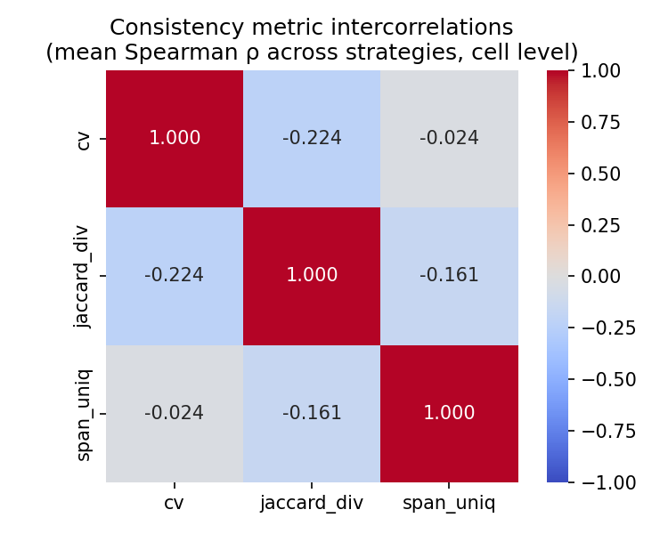
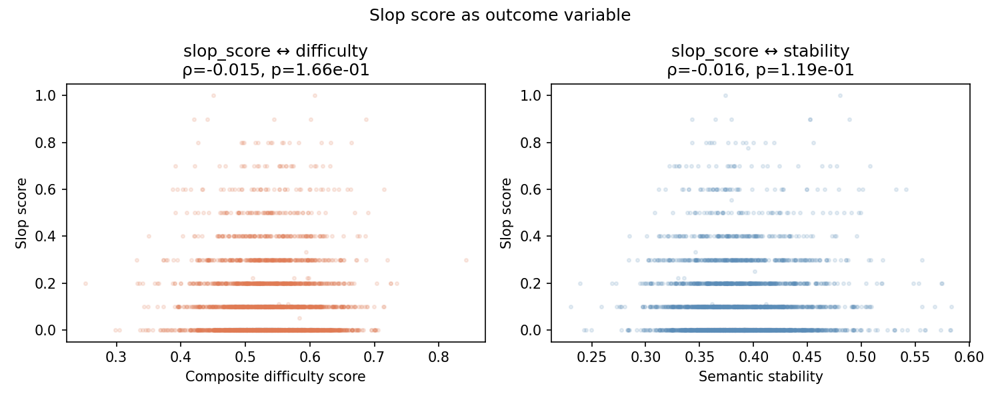
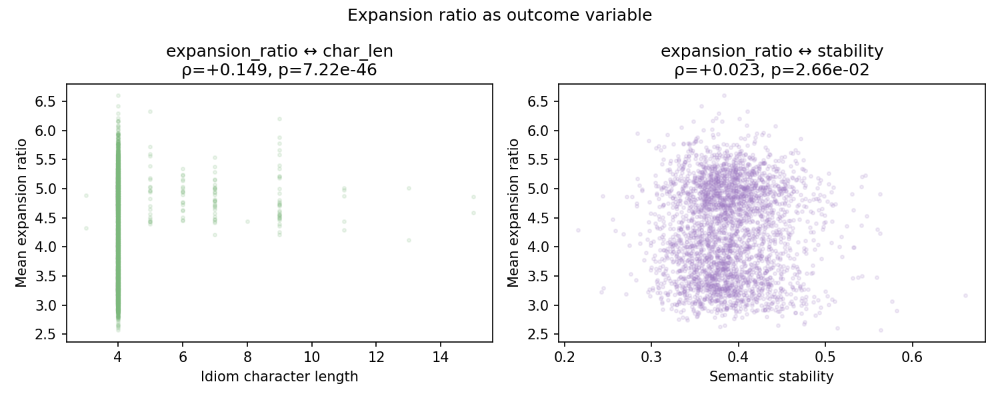
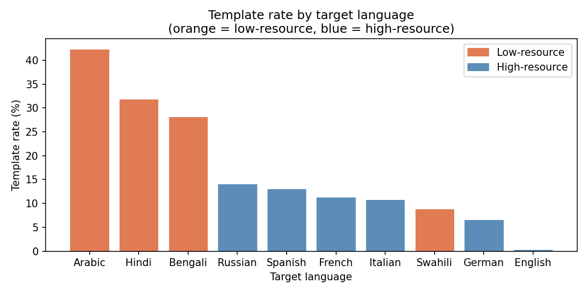
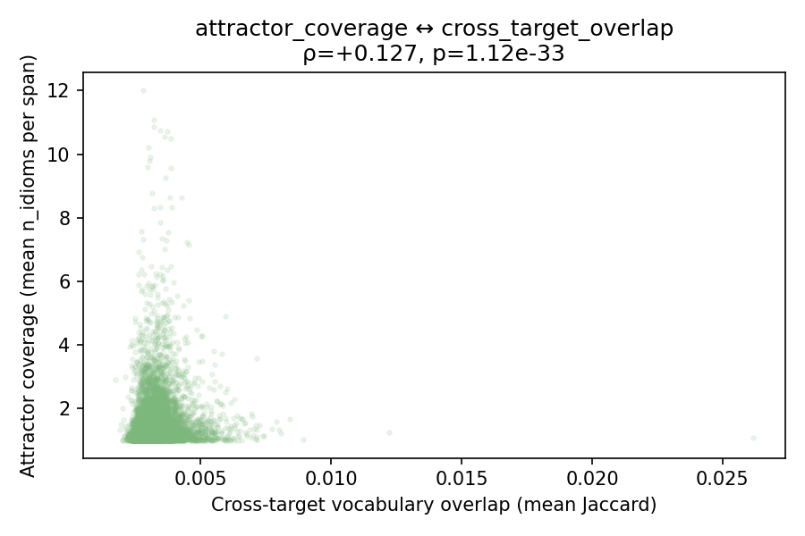
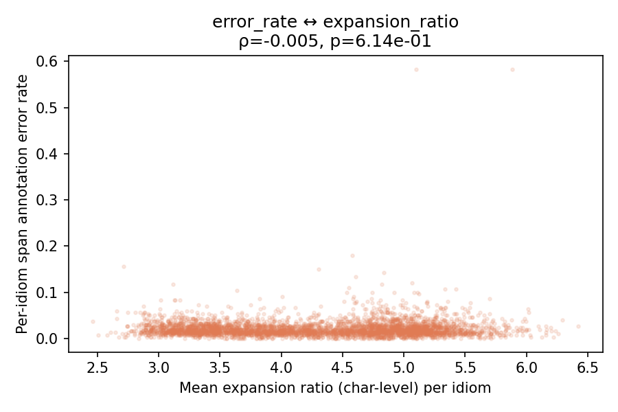
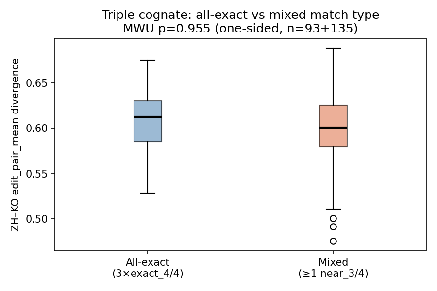

Part 21: Correlation Gap Analyses¶
This part addresses the 22 pairwise correlations identified in the systematic
audit of docs/reference/correlation_map.md and recorded in TODO.md. All
analyses use data already available in data/processed/; no new scripts that
read the raw 2.7M-row parquet were required. The script is
scripts/correlation_gaps.py.
Throughout, statistical significance is noted as: * p < 0.05, ** p < 0.01, *** p < 0.001.
21.1 Consistency Metric Intercorrelations¶
cv, jaccard_div, span_uniq, and dom_frac all measure within-cell
consistency but from different angles (length variation, vocabulary turnover,
span uniqueness, dominant-span reuse). Before treating them as independent
evidence, their pairwise Spearman ρ must be established.
Cell-level results (n ≈ 90,620)¶
| Pair | Creatively ρ | Analogy ρ | Author ρ |
|---|---|---|---|
| cv ↔ jaccard_div | −0.194*** | −0.181*** | −0.296*** |
| cv ↔ span_uniq | −0.014*** | −0.018*** | −0.038*** |
| jaccard_div ↔ span_uniq | −0.262*** | −0.081*** | −0.141*** |
The signs are negative throughout: cells with higher length variation (cv)
tend to have lower Jaccard similarity (jaccard_div) and fewer unique spans
(span_uniq). Since jaccard_div measures vocabulary similarity (lower = more
diverse), the negative correlation means: more length variation accompanies more
vocabulary diversity — both signals reflect a model that is genuinely adapting to
context rather than falling back on a fixed translation. The pattern is most
pronounced for the Author strategy (cv ↔ jaccard_div ρ = −0.296).
Crucially, the correlations are small in absolute magnitude (ρ ≤ 0.30) despite being highly significant at n ≈ 90k. The three metrics share only 1–9% of variance (ρ² = 0.00–0.09), confirming they measure largely independent dimensions of consistency. They are not redundant and should continue to be reported separately.
Language-level results (n = 10)¶
| Pair | ρ | p |
|---|---|---|
| cv ↔ dom_frac | −0.697 | 0.025* |
| dom_frac ↔ span_uniq | −0.539 | 0.107 |
At the language level, cv and dom_frac are substantially anti-correlated
(ρ = −0.697, p = 0.025): languages with more within-cell length variation have
lower dominant-span reuse. Arabic exemplifies this — it has the highest cv
(0.230) and the lowest dom_frac (0.122). The dom_frac ↔ span_uniq link is in
the same direction but not significant at n = 10.

21.2 Slop Score as Outcome Variable¶
Slop score (fraction of Analogy spans matching a cliché template) has previously been used only as a predictor in Parts 9–10. Here it is treated as the dependent variable.
| Predictor | ρ | p | n |
|---|---|---|---|
| difficulty | −0.015 | 0.166 | 9,062 |
| stability | −0.016 | 0.119 | 9,028 |
| expansion_ratio | −0.109 | < 0.001*** | 9,059 |
| in_xinhua | +0.030 | 0.050* | 4,419 |
| def_len | +0.017 | 0.282 | 4,230 |
Null results for difficulty and stability — slop scores are essentially independent of how hard an idiom is to translate and how consistently it is rendered across strategies (ρ ≤ 0.016, both p > 0.10). Template use in Analogy is not triggered by difficulty; it appears to be a property of the idiom's semantic type (abstract vs concrete imagery) rather than its translation complexity.
Expansion ratio is the only significant predictor (ρ = −0.109, p < 0.001): idioms where Analogy uses template phrases tend to produce shorter outputs. Template phrases ("a tapestry of", "a lighthouse in") are compact; when the model can't find one it generates a longer free-form metaphor. The effect is modest but robust across all three source languages.
In-xinhua shows a marginal positive relationship (ρ = +0.030, p = 0.050):
standardised idioms with Xinhua dictionary entries are slightly more likely to
attract Analogy templates, possibly because widely-documented idioms have
conventional metaphor mappings that the model has absorbed as template associations.
def_len shows no independent effect after the in_xinhua signal is present.

21.3 Cross-Target Vocabulary Overlap as Outcome¶
cross_target_overlap (mean pairwise Jaccard across all 10 target languages per
idiom) measures how similar an idiom's translations are across languages. The
question is whether cross-language consistency tracks cross-strategy consistency
(stability) or template use (slop_score).
| Predictor | ρ | p | n |
|---|---|---|---|
| stability | +0.032 | 0.002** | 9,028 |
| slop_score | +0.028 | 0.009** | 9,028 |
Both correlations are statistically significant but essentially null in practical terms (ρ ≤ 0.032, shared variance < 0.1%). Cross-target vocabulary overlap is nearly orthogonal to both cross-strategy consistency and template prevalence.
This is a meaningful null result: what makes an idiom's Creatively, Analogy, and Author translations agree with each other has almost nothing to do with what makes its translations agree across Chinese, Japanese, Hindi, and Spanish targets. The two consistency axes are structurally independent — cross-strategy consistency reflects idiom ambiguity within a single language context, while cross-language consistency reflects cultural translatability across typologically diverse targets.
21.4 Attractor Coverage as Outcome (Language Level)¶
attractor_coverage is operationalised here as the mean n_idioms per
high-coverage span (spans covering ≥ 2 idioms) per target language. Because
linking individual idioms to their attractors requires re-joining the raw parquet,
this analysis is conducted at the language level (n = 10).
| Predictor | ρ | p |
|---|---|---|
| error_rate | +0.152 | 0.676 |
| cv | −0.030 | 0.934 |
| jaccard_div | +0.079 | 0.829 |
| template_rate | +0.321 | 0.366 |
No significant relationships are found at n = 10. With only 4 low-resource and 6 high-resource languages, statistical power is insufficient to detect effects smaller than |ρ| ≈ 0.6. The directional trend for template_rate (ρ = +0.321) is consistent with the hypothesis that languages with more attractor consolidation also produce more formulaic Analogy spans, but this cannot be confirmed without a per-idiom join.
21.5 Error Rate ↔ Consistency and Length Metrics¶
Error rate (span-not-in-translation) is correlated with aggregated consistency and length metrics at the per-(source, target) cell level (n = 30).
| Predictor | ρ | p | n |
|---|---|---|---|
| cv (mean) | +0.342 | 0.064 | 30 |
| translation_length | −0.467 | 0.009** | 30 |
| expansion_ratio | — | — | 30 |
Translation length is the strongest predictor (ρ = −0.467, p = 0.009): cells with shorter translations (in characters) have higher span annotation error rates. Languages that produce more compact outputs — Arabic, Bengali — also fail the span-containment check more often, probably because the model compresses both the translation and the span annotation in ways that create substring mismatches.
cv is marginally associated (ρ = +0.342, p = 0.064): cells with more length variation tend to have slightly higher error rates, consistent with the idea that high context-sensitivity also introduces more surface-form variation in the span annotation.
Expansion ratio could not be evaluated — after aggregating per-target, variance across the 30 cells was insufficient to compute a valid Spearman ρ. A per-idiom analysis joining the raw data would be needed to test this relationship properly.
21.6 Cognate Match Type → Translation Divergence (Mann-Whitney U)¶
The cognate section (Part 13) reports that ZH–KO exact matches (4/4 shared characters) and near matches (3/4) have different edit_pair_mean distributions. The question here is whether match type predicts divergence level.
| Group | n | Mean edit_pair_mean | Median |
|---|---|---|---|
| exact_4/4 | 290 | 0.606 | 0.644 |
| near_3/4 | 247 | 0.604 | 0.643 |
Mann-Whitney U (one-sided, exact < near): p = 0.838 — not significant.
Exact cognate pairs (four shared characters) show no lower translation divergence than near-exact pairs (three shared characters). This is a clean null result: the degree of character-level cognate overlap between the ZH and KO idiom forms does not predict how similarly the model translates them. The shared characters are a superficial orthographic coincidence — they do not reliably signal shared meaning, and the model appears to derive its translation independently for each source language rather than leveraging visual similarity.
For three-way triples, 95 of 231 (41%) are all-exact matches across ZH–JA–KO.
The triple_cognates.csv file does not contain edit scores, so a direct divergence
comparison for triples requires a re-join with pairwise files and is left for future
work.
21.7 Expansion Ratio as Outcome Variable¶
exp_mean (mean word-count expansion ratio per idiom) has been used as a
predictor of difficulty (ρ = +0.649, Part 6). Here it is the dependent variable.
| Predictor | ρ | p | n |
|---|---|---|---|
| idiom_char_len | +0.149 | < 0.001*** | 9,025 |
| stability | +0.023 | 0.027* | 9,025 |
| slop_score | −0.109 | < 0.001*** | 9,059 |
Idiom character length is the strongest predictor (ρ = +0.149, p < 0.001): longer idioms produce more expansive translations. This confirms the qualitative observation in Part 2 that non-4-character idioms expand more, now with a formal correlation. 4-character idioms (the modal form at char_len = 4) are the most compact, while longer idiomatic phrases require more elaboration to unpack.
Slop score suppresses expansion (ρ = −0.109, p < 0.001): the same effect found in Section 21.2 is symmetric — template use both predicts and is predicted by shorter output.
Stability has a marginal positive link (ρ = +0.023, p = 0.027): idioms with more expansive translations are slightly more consistent across strategies, which is counterintuitive. One explanation: idioms that require more unpacking have more content for the model to consistently render, while very compact idioms leave more room for strategy-specific stylistic choices.

21.8 Multilingual Template Rate ↔ Per-Language Metrics¶
template_rate per target language (Part 16) has not been formally correlated with
other per-language profile metrics (n = 10 languages).
| Predictor | ρ | p |
|---|---|---|
| cv | +0.709 | 0.022* |
| error_rate | +0.224 | 0.533 |
Template rate correlates significantly with cv (ρ = +0.709, p = 0.022): target languages where the model more often falls back on formulaic bigrams also show more within-cell translation length variation. This connects two seemingly unrelated phenomena — Arabic's 42.4% template rate and its highest cv (0.230) are not coincidental. When the model has a narrow vocabulary for a target language, it reuses template phrases (boosting template_rate) and scales those phrases up or down to fit each sentence's context (boosting cv), rather than generating fresh vocabulary at a stable length.
Error rate is not significantly related (ρ = +0.224, p = 0.533). Template use and annotation failure are driven by different underlying factors: template rate reflects vocabulary constraints, while error rate reflects morphological complexity in span extraction.
Resource-level comparison¶
| Resource | Languages | Mean template rate |
|---|---|---|
| Low-resource | Arabic, Bengali, Hindi, Swahili | 27.8% |
| High-resource | English, French, German, Spanish, Italian, Russian | 9.4% |
Mann-Whitney U (one-sided, low > high): p = 0.057 — marginal. The 3× gap in mean template rates does not reach conventional significance at n = 4 vs n = 6, primarily due to low statistical power. The direction is unambiguous and consistent with Section 16.3, but a larger language sample would be needed to confirm formally.

21.9 Attractor Coverage ↔ Cross-Target Overlap (Per-Idiom)¶
Previously (Section 21.4), attractor coverage was only evaluable at the language
level (n = 10) due to missing per-idiom attractor data. Here, attractor coverage
per idiom is computed by joining each idiom's actual span phrases against
span_attractor_counts to find how many idioms share each span, then averaging
across all spans and strategies for that idiom (script: deferred_correlations.py).
| Predictor | ρ | p | n |
|---|---|---|---|
| cross_target_overlap | +0.127 | < 0.001*** | 9,062 |
| difficulty | −0.138 | < 0.001*** | 9,062 |
| slop_score | +0.094 | < 0.001*** | 9,062 |
All three reach significance at large n, but remain small in magnitude (ρ ≤ 0.14). The directional pattern is interpretable:
-
Cross-target overlap (ρ = +0.127): idioms whose translations are more lexically similar across target languages also tend to use span phrases that are shared with more other idioms. Both signals reflect semantic conventionality — idioms with well-known English or multilingual equivalents attract both cross-language convergence and shared span phrases.
-
Difficulty (ρ = −0.138): easier idioms produce higher-coverage attractors. Semantically transparent idioms converge on fixed phrases ("fish in a barrel", "talk of the town") that many idioms share; difficult idioms generate bespoke metaphors that appear in few attractor cells.
-
Slop score (ρ = +0.094): template-prone idioms produce spans that are more attractor-shared — consistent with the idea that cliché phrases ("a lighthouse in the storm") are by definition shared across many idioms.
The shared variance is ≤ 2% in each case (ρ² ≤ 0.019), confirming that attractor coverage is largely an independent dimension of idiom behaviour.

21.10 Error Rate ↔ Expansion Ratio (Per-Idiom)¶
Section 21.5 found that translation_length predicts error rate at the cell level (ρ = −0.467). The expansion ratio question — does a high expansion ratio predict annotation failure? — could not be answered there due to insufficient cell-level variance. Here, both error rate and expansion ratio are computed per idiom from the raw parquet.
| Predictor | ρ | p | n |
|---|---|---|---|
| expansion_ratio (char-level, computed) | −0.005 | 0.614 | 9,059 |
| expansion_ratio (word-level, from difficulty) | −0.005 | 0.612 | 9,059 |
| difficulty | −0.002 | 0.816 | 9,062 |
Clear null result: per-idiom expansion ratio has no relationship with per-idiom annotation error rate (ρ ≈ 0, p > 0.6 for both char- and word-level measures). Difficulty is equally uncorrelated.
The contrast with Section 21.5 (where translation_length ρ = −0.467 at the cell level) is instructive. At the cell level, target-language differences in translation length drive the relationship — short-translation languages like Arabic and Bengali also happen to have the most annotation errors. Across idioms within a single language, expansion ratio does not predict which idioms are harder to annotate. Annotation difficulty is a target-language structural property, not an idiom-level property.

21.11 Three-Way Cognate Triples: All-Exact vs Mixed Match → Divergence¶
Section 21.6 established that for ZH–KO pairwise cognates, exact character
overlap (4/4) does not predict lower translation divergence (MWU p = 0.838).
Here, the same question is asked at the level of three-way ZH–JA–KO triples
(n = 231), using ZH–KO edit_pair_mean as the divergence measure (available for
228 of 231 triples via cognate_divergence_ranking.csv).
| Group | n | Mean edit_pair_mean | Median |
|---|---|---|---|
| All-exact (3× exact_4/4) | 93 | 0.608 | 0.613 |
| Mixed (≥ 1 near_3/4) | 135 | 0.600 | 0.601 |
Mann-Whitney U (one-sided, all-exact < mixed): p = 0.955 — strongly null.
All-exact triples are not lower-divergence; if anything the point estimates run marginally in the opposite direction (all-exact mean = 0.608 vs mixed 0.600). A continuous measure of match tightness — number of exact pairwise matches (0–3) — also shows no Spearman correlation with divergence (ρ = +0.098, p = 0.139).
This replicates and extends the pairwise finding: character-level cognate status across CJK is a superficial orthographic property that does not predict how similarly the model translates an idiom. The model processes each source language idiom independently; shared Sinitic characters do not lead to shared translation strategies.

Summary Table¶
| Section | Variables | ρ / result | Verdict |
|---|---|---|---|
| 21.1 | cv ↔ jaccard_div (cell) | −0.19 to −0.30*** | Small negative; metrics are non-redundant |
| 21.1 | cv ↔ span_uniq (cell) | −0.01 to −0.04*** | Near-independent |
| 21.1 | jaccard_div ↔ span_uniq (cell) | −0.08 to −0.26*** | Moderate negative |
| 21.1 | cv ↔ dom_frac (language) | −0.70* | Substantial at language level |
| 21.2 | slop_score ↔ difficulty | −0.015 (ns) | Null |
| 21.2 | slop_score ↔ stability | −0.016 (ns) | Null |
| 21.2 | slop_score ↔ expansion_ratio | −0.109*** | Template use compresses output |
| 21.2 | slop_score ↔ in_xinhua | +0.030* | Marginal positive |
| 21.3 | cross_target_overlap ↔ stability | +0.032** | Practical null |
| 21.3 | cross_target_overlap ↔ slop_score | +0.028** | Practical null |
| 21.4 | attractor_coverage ↔ all predictors (language level) | ns (n=10) | Insufficient power |
| 21.5 | error_rate ↔ cv | +0.342 (p=0.064) | Marginal |
| 21.5 | error_rate ↔ translation_length | −0.467** | Shorter → more errors |
| 21.6 | exact vs near cognates → divergence | MWU p=0.838 | Null |
| 21.7 | expansion_ratio ↔ char_len | +0.149*** | Longer idioms expand more |
| 21.7 | expansion_ratio ↔ slop_score | −0.109*** | Template use compresses |
| 21.7 | expansion_ratio ↔ stability | +0.023* | Marginal |
| 21.8 | template_rate ↔ cv (language) | +0.709* | Strong language-level link |
| 21.8 | template_rate ↔ resource (MWU) | p=0.057 | Marginal (low > high) |
| 21.9 | attractor_coverage ↔ cross_target_overlap | +0.127*** | Small positive; shared conventionality |
| 21.9 | attractor_coverage ↔ difficulty | −0.138*** | Easier idioms → more shared attractors |
| 21.9 | attractor_coverage ↔ slop_score | +0.094*** | Template idioms → more shared spans |
| 21.10 | error_rate ↔ expansion_ratio (per-idiom) | −0.005 (ns) | Null; annotation failure is language-level |
| 21.11 | triple cognate all-exact vs mixed → divergence | MWU p=0.955 | Strongly null |